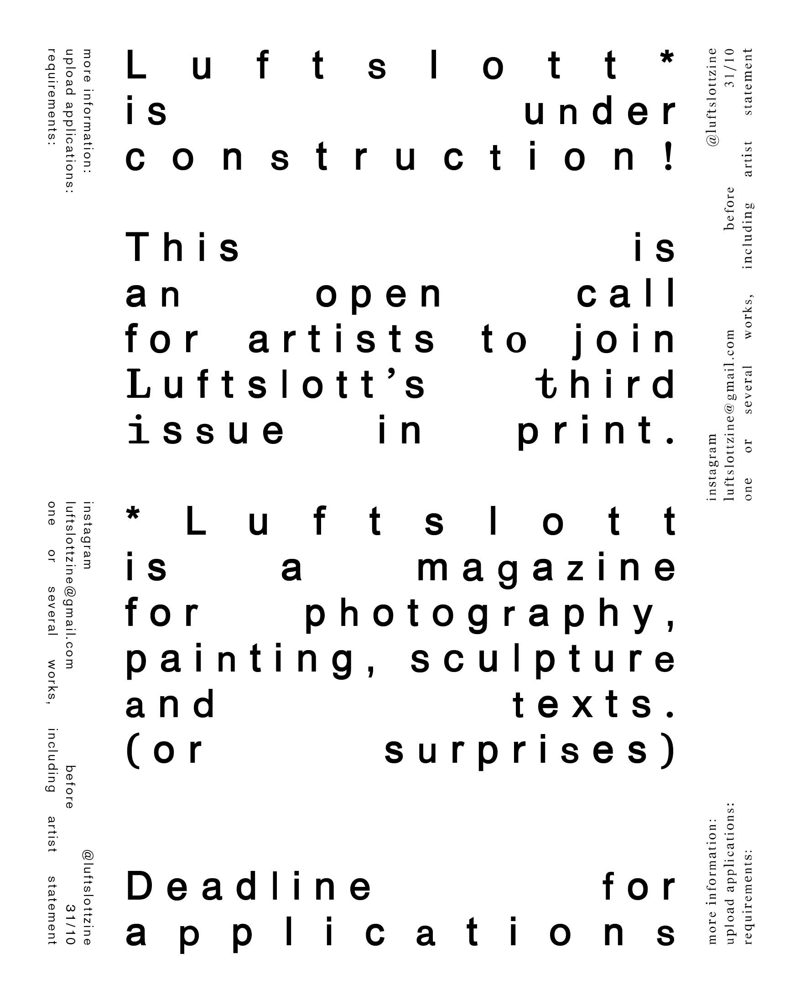
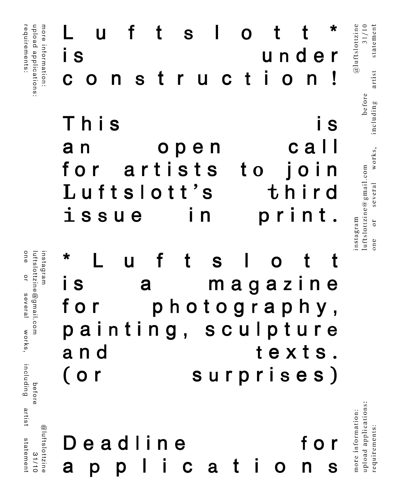
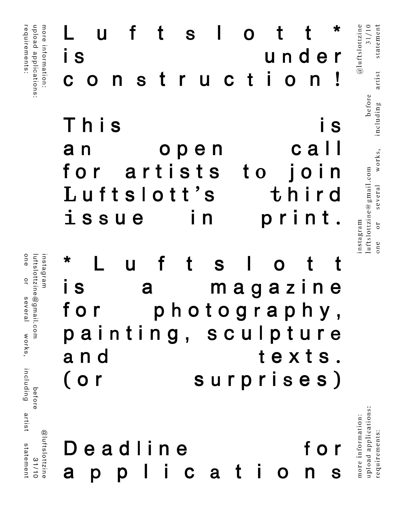

Luftslott is Under Construction
Open Call Luftslott #3. Concept development and graphic (re)design for Luftslott, a magazine for photography and other art forms. Production in collaboration with Agnes Nebrelius.

 

I design graphic identity through print, websites (like this one), animation. I also experiment with programming, 3d-animation and video editing. Tools I use include:
InDesign, Photoshop, Illustrator
After Effects, Premiere Pro
Figma
Cavalry, Blender
HTML, CSS, JavaScript
Handlettering, pencil sketching and illustration
Currently, I am working at an international architecture and design studio based in Oslo. Here, I design visual identities as well as digital or spatial implementations of graphic design, collaborating across diciplines.
Snøhetta (NO)
2025-
I recently graduated from a small scale (sometimes experimental) design school in Stockholm:
Visual Communication, BFA
Beckmans College of Design
2022-2025
During my bachelor studies, I did an internship at a design studio. My contributions were mainly in 2d+3d animation, web design and wireframing:
Research and Development (SE)
2024
Fellow designer Peter Ström has intitiated an award(!) as part of a resarch project on preservation and archival of digital design. In this project I contributed with research on swedish web design projects and was part of the jury selecting nominees and recipients:
Svensk Webbkonst 2021-2024
w3.svenskwebbkonst.se
Occationally, I do freelance work at a smaller scale, designing posters and simple printed matter. Don't hesitate to contact:
Open Call Luftslott #3. Concept development and graphic (re)design for Luftslott, a magazine for photography and other art forms. Production in collaboration with Agnes Nebrelius.
